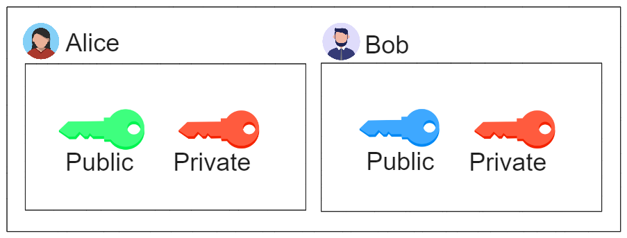

When communicating over the internet it’s generally accepted by everyone that encryption is important to transmitting your data securely. But how does this data get from A to B without exposing your data to potential attackers?
In this article I will touch lightly on the different encryption types used and how they can be used together to ensure your keys are exchanged securely.
Symmetric vs Asymmetric Encryption
Before talking about how to securely exchange encryption keys you must first understand the differences between symmetric and asymmetric encryption and what kind of encryption is available.
I will try to explain both of these methodologies as simple as possible.
Symmetric
Symmetric encryption uses the same key for both encrypting and decrypting data. It can encrypt large blocks of data quickly and efficiently.
Types of symmetric encryption include:
- AES
- DES
Asymmetric
Asymmetric encryption uses different keys for encryption (public key) and decryption (private key) and is typically used on small blocks of data because it is slower than symmetric encryption.
The encryption and decryption key is known as the public and private key-pair.
Types of asymmetric encryption include:
- RSA
- Diffie-Hellman
- Elliptic Curve
Why use one over the other?
Because of the properties of asymmetric encryption it’s very common to use both symmetric and asymmetric encryption for secure communication.
This is done through something known as the key exchange where the public keys are exchanged with each other and the symmetric key is encrypted and sent back.
What does this Key Exchange look like?
In this example I am using RSA as the asymmetric and AES encryption as the symmetric encryption.
Alice and Bob both have generated their asymmetric key-pair.

To start communication Alice and Bob must first exchange with each other their public asymmetric key:

Alice and Bob can now encrypt a message using each others public asymmetric key:

Once they have encrypted their message using each others public asymmetric key they can send the message back to each other:

Once Alice and Bob have exchanged their encrypted message, they can decrypt the message using their own private asymmetric key:

Alice and Bob can use this process to exchange a symmetric key to each other without exposing it to a potential man-in-the-middle.
This concludes the key exchange.
Summary
This article breaks down encryption into two types: symmetric, which uses one key for big data, and asymmetric, which uses two keys for smaller data.
By combining these methods, secure communication is achieved. The key exchange process, demonstrated with RSA and AES, shows how public keys are shared safely, ensuring a secure way for parties like Alice and Bob to swap important information.
If you would like to learn about these two methodologies you can watch this video created by Simply Explained.